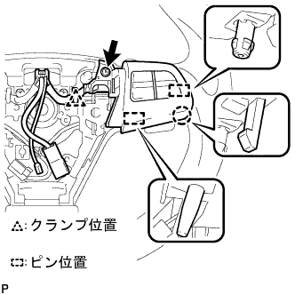
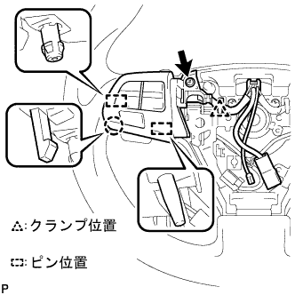
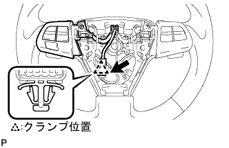
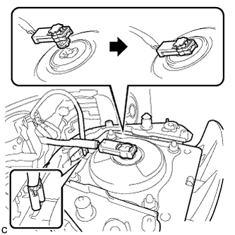

Shift Paddle Switch (U660E) Installation |
| 1. Install Transmission Shift Switch |
Connect the connector to the transmission shift switch.
Engage switch wire NO.1 with the 4 guides.
Engage the 4 pins and install the transmission shift switch with the 2 screws.
| 2. Install Steering Pad Switch Assembly |
 |
Engage the 2 pins and claw, and temporarily install the steering pad switch RH side.
Engage the clamp.
Install the steering pad switch RH side with the screw.
 |
Engage the 2 pins and claw, and temporarily install the steering pad switch LH side.
Engage the clamp.
Install the steering pad switch assembly to the steering wheel assembly with the screw.
 |
Engage the clamp.
Connect the connector.
| 3. Install Steering Wheel Assembly |
 |
Align the matchmarks and install the steering wheel assembly to the steering column assembly.
Install the nut.
Connect each connector to the spiral cable.
| 4. Install Horn Button Assembly |
Make sure that the ignition switch is OFF.
Check that the battery negative terminal is disconnected.
 |
Connect the airbag connector to the horn button assembly.
Push in the lock of the airbag connector.
Connect the horn connector to the horn button assembly in the direction shown in the illustration.
Push in the horn button assembly to engage the 2 pins and install the horn button assembly to the steering wheel assembly.
| 5. Install Steering Wheel Cover Lower NO.2 |
Steering Wheel Assembly 3 Spoke:
Engage the 3 claws to install steering wheel cover LWR No.2.
Steering Wheel Assembly 4 Spoke:
Engage the 2 claws to install steering wheel cover LWR No.2.
| 6. Install Steering Wheel Cover Lower NO.3 |
Steering Wheel Assembly 3 Spoke:
Engage the 3 claws to install steering wheel cover LWR No.3.
Steering Wheel Assembly 4 Spoke:
Engage the 2 claws to install steering wheel cover LWR No.3.
| 7. Check Front Wheels Straight-ahead Position |
| 8. Connect Battery Negative Terminal |
)| 9. Inspect Airbag Warning Light |
 |
Check that the warning light comes on when the IG is turned ON.
Check that the warning light goes off approximately 6 seconds after the IG is turned ON.